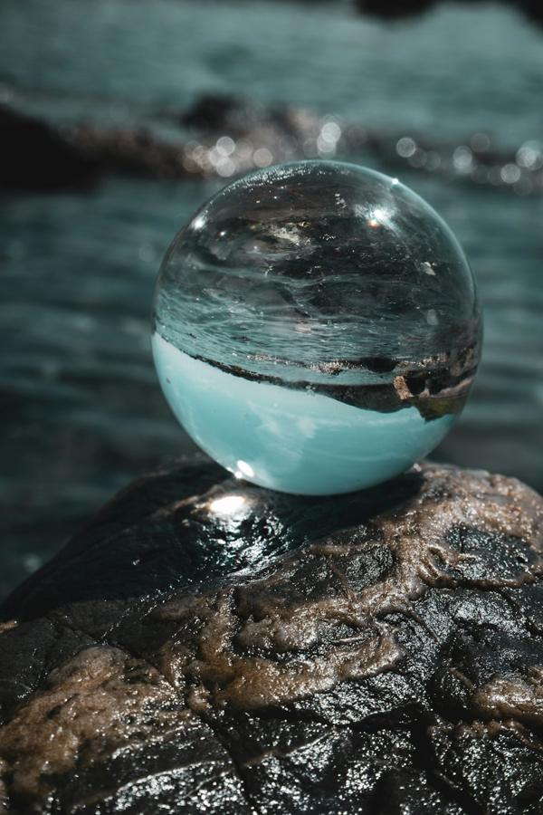

A guide to this page
What on earth is this?
You are looking at the centre of a grid of letters that John Dee, scholar and adviser at the court of Elizabeth I, wrote down in the 1580s. Dee believed the grid was dictated by angels, seen in a crystal by his scryer Edward Kelley. Every letter belongs to the name of an angel or a name of God, and the layout of the grid tells you how to read those names out.
Four tablets, four quarters of the world
Dee's Great Table is one large table divided into four quarters, one for each compass direction. Each quarter is 12 squares wide and 13 deep, 156 squares in all, and a small Table of Union joins the four at their inner corners. Dee's text explains why the quarters exist: God set guardians over the world to keep the wicked spirits in check.
“Let there be keepers, watchmen, and princes placed over her.”Dee's manuscript, as transcribed by Skinner & Rankine
Those watchmen are why the quarters are now called the Watchtowers. Each is ruled by one great angel, a King, who stands guard over East, West, North or South. Later magicians of the Golden Dawn paired the quarters with the four elements, and the switcher at the top of the page follows their pairing: East with Air, West with Water, North with Earth, South with Fire.
The cross inside each tablet
Through the middle of each tablet runs a cross of 36 squares: the two middle columns (6 and 7) and the middle row (7). Dee calls it the black cross, because its letters were written in black between ruled lines. This is the part the page brings to life.
What the cross spells out
Dee describes a ladder of beings, and the cross holds the top of it.
- Three Holy Names
Split row 7 into groups of three, four and five letters and you get three names of God, carried on banners before the King. In the East they are ORO IBAH AOZPI. Four tablets give twelve names, which Dee says govern all creatures on Earth, seen and unseen.
- The King
One mighty angel for each quarter, its overseer. The name is gathered from letters circling the centre of the cross: Dee builds BATAIVA from the squares around the meeting point, adding an A or an H to make eight letters.
- Six Seniors
Read outward from the centre along the six arms of the cross, seven letters each. Dee ties them to the 24 elders around the throne in the Book of Revelation: six per quarter, 24 in all. Their office, in his Latin, is knowledge of human affairs and judgement.
- Below them
Each Lesser Angle has its own small cross, its own names of God, and sixteen angels with particular skills, such as healing, metals and stones, or transformation. Under those come countless lesser spirits, good and bad. That lower world is outside this page.
H·A·B·I·O·R·O Start on the H at column 7, row 7, and read left along the row.A·A·O·X·A·I·F Start on the A at column 6, row 7, and climb the column.H·I·P·O·T·G·A Start on the H again and descend column 7.The same rule produces all six Seniors in every tablet. Click any square on the cross to see which names pass through it.
Why learn this?

It depends whether you mean what Dee was promised or what a person reliably gains today.
What the system promised
- A working directory of a spiritual hierarchy: the Holy Names govern the King, the King's name calls the Seniors, and so on down.
- Counsel from the Seniors on human affairs and judgement.
- From the angels of the Lesser Angles: healing, the powers of metals and stones, and skill in transformation.
- The angels themselves, called “to visible appearance”.
What study reliably gives
- Historical literacy in a thread that runs from Dee through the Golden Dawn to most modern ceremonial magic.
- The ability to tell Dee's text from later layers, which most books on the subject blur.
- A contemplative discipline: holding a structure in mind and tracing it slowly.
- A beautiful puzzle, and depth for anything you make or teach from it.
There is no evidence that the angels or their gifts work as Dee was told. Whether they do is a matter of belief and experience that each person answers for themselves. What mastery reliably gets you is understanding, discernment and a rich practice. The is built around exactly that.
Where it comes from
Dee (1527–1608) was a mathematician, astrologer and collector of one of the largest libraries in England. From 1569 he tried to contact angels, and from the early 1580s he worked with Kelley, keeping careful diaries of every session. The tables were refined over several years; the version Dee marked as corrected is dated 20 April 1587 and credited to the angel Raphael.
After Dee's death his most secret books lay hidden in the secret drawer of a cedar chest. A London family found them in 1662, their maid burned about half of the papers as kindling, and the rest survived the Great Fire of 1666. They reached the antiquary Elias Ashmole in 1672 and are now in the British Library. In the 1880s and 1890s the Hermetic Order of the Golden Dawn built its “Enochian” magic on a small part of this material, and most modern books follow their version.
The five stages
Press Unveil to take the cross apart one layer at a time.
- The Sealed Matrix. The 36 squares as they sit in the table, unlit.
- The Three Holy Names rise from row 7.
- The Six Seniors split away along their arms. The planet colours follow later practice, not Dee.
- The King. The centre lifts and his name circles it.
- The Tarot Harmony. The squares turn over to show tarot cards.
What is Dee and what is not
The letters, the Holy Names, the Kings and the Seniors follow Dee's corrected table as transcribed by Skinner and Rankine. Dee often spelled names out for speaking, so his text has Hetemorda for HTMORDA and Lefarahpem for LSRAHPM; this page shows the bare letters as they stand in the table.
Dee never linked the tables to tarot or to planets. Those layers came from the Golden Dawn, and the card placement in stage IV is a study layout made for this page, not a traditional table.
Source: Stephen Skinner and David Rankine, The Practical Angel Magic of John Dee's Enochian Tables (Golden Hoard Press, 2004), a transcription of Tabula Bonorum Angelorum Invocationes from British Library Sloane MS 307 and related manuscripts.